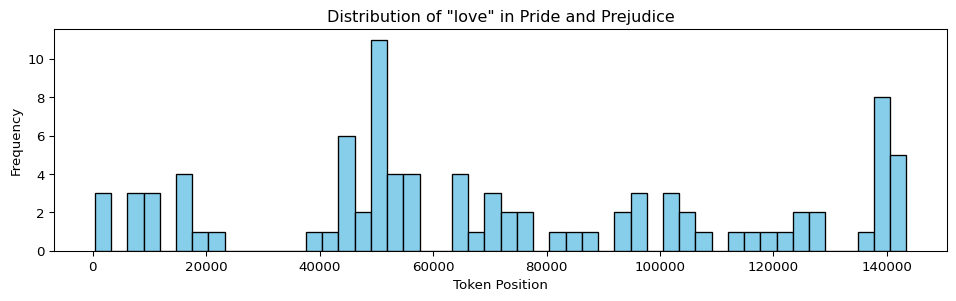
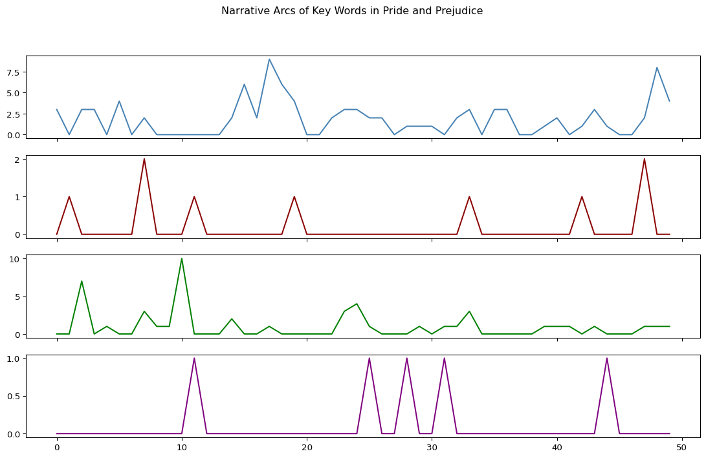
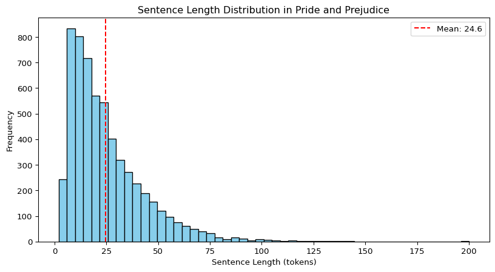
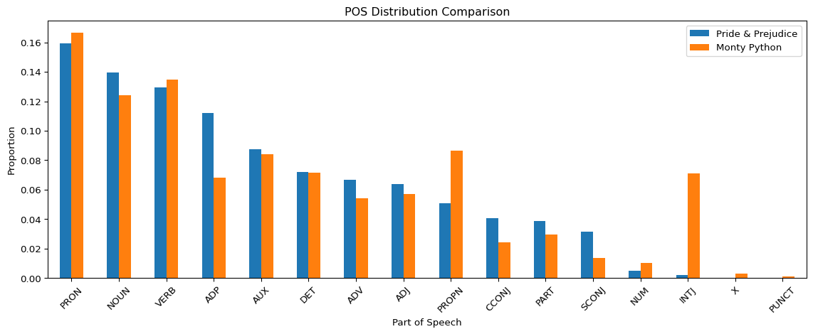
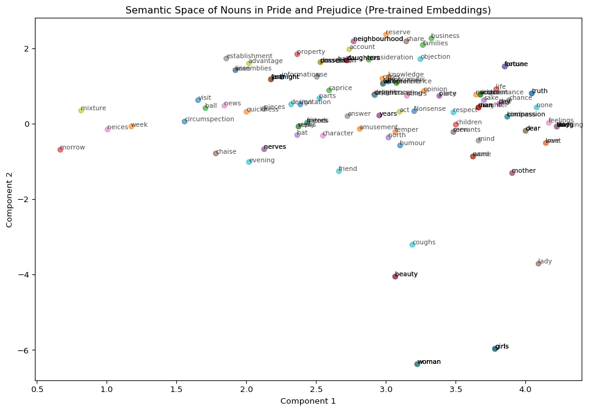

# Load texts from GitHub
grail_url = 'https://github.com/browndw/humanities_analytics/raw/refs/heads/main/data/data_text/grail.txt'
pride_url = 'https://github.com/browndw/humanities_analytics/raw/refs/heads/main/data/data_text/pride.txt'
with urllib.request.urlopen(grail_url) as response:
grail_raw = response.read().decode('utf-8')
with urllib.request.urlopen(pride_url) as response:
pride_raw = response.read().decode('utf-8')3 NLP Processing with spaCy

3.1 Introduction
Most text analysis workflows follow a similar pattern: read text → process text → extract features → analyze features → interpret results. The middle steps—processing and feature extraction—often involve the same computational operations: tokenization, part-of-speech tagging, parsing, and entity recognition. Instead of reinventing these steps for every project, NLP processing pipelines automate them.
spaCy is an industrial-strength NLP library that provides a complete pipeline architecture. Unlike tools designed for teaching (NLTK) or experimental research (Stanford CoreNLP), spaCy prioritizes speed, accuracy, and production readiness. It’s the engine behind many commercial NLP applications and can process millions of words per second on modern hardware.
Why Processing Pipelines Matter
A good pipeline:
- Standardizes preprocessing: Everyone on a team gets the same tokenization, the same POS tags, the same parses
- Enables reproducibility: Save the pipeline configuration and get identical results later
- Supports complex workflows: Chain operations (tokenize → tag → parse → extract) without manual coordination
- Facilitates reuse: Train custom components (NER, text classification) and plug them into existing pipelines
- Improves efficiency: Process once, extract many features (tokens, lemmas, dependencies, entities) in one pass
Research questions spaCy can help answer:
- How do sentence structures differ between genres or time periods?
- Which characters are described with which adjectives across a novel?
- Where do key thematic words cluster in a narrative?
- How do authors distribute place names or temporal references?
- Which documents in a corpus share similar vocabulary profiles?
This tutorial covers:
- Pipeline architecture: What spaCy does automatically when you process text
- Token-level analysis: Exploring word attributes, frequencies, and distributions
- Sentence-level analysis: Segmentation and structural patterns
- Named entity recognition: Extracting people, places, organizations, and events
- Part-of-speech tagging: Identifying grammatical categories and stylistic patterns
- Dependency parsing: Understanding grammatical relationships
- Word embeddings: Semantic similarity from pre-trained vectors
- Document vectorization: Comparing texts numerically
3.2 Understanding the spaCy Pipeline
3.2.1 What Happens When You Process Text?
When you run doc = nlp(text), spaCy executes a multi-stage pipeline:
1. Tokenization: Splits text into words, punctuation, numbers
2. Part-of-speech tagging: Assigns grammatical categories (noun, verb, adjective, etc.)
3. Lemmatization: Reduces words to dictionary forms (“running” → “run”)
4. Dependency parsing: Identifies grammatical relationships between words
5. Named entity recognition (NER): Labels spans as people, organizations, locations, etc.
6. (Optional) Additional components: Sentiment analysis, text classification, custom extractors
All of these happen in one pass over the text. The result is a Doc object containing the original text plus all linguistic annotations.
3.2.2 Models and Sizes
spaCy’s English models come in three sizes:
en_core_web_sm(small, ~12 MB): No word vectors, faster, less accurateen_core_web_md(medium, ~40 MB): 300-dimensional word vectors, balanced speed/accuracyen_core_web_lg(large, ~560 MB): More vectors, highest accuracy, slower
For this tutorial, we use en_core_web_md—large enough for meaningful semantic analysis, small enough for quick processing.
3.3 Loading and Pre-processing Texts
We’ll analyze two texts: Monty Python and the Holy Grail (1975 screenplay) and Jane Austen’s Pride and Prejudice (1813 novel).
3.3.1 The Importance of Pre-processing
The Monty Python script includes character names, stage directions, and formatting. Let’s peek:
grail_raw[:500]'SCENE 1: [wind] [clop clop clop] \nKING ARTHUR: Whoa there! [clop clop clop] \nSOLDIER #1: Halt! Who goes there?\nARTHUR: It is I, Arthur, son of Uther Pendragon, from the castle of Camelot. King of the Britons, defeator of the Saxons, sovereign of all England!\nSOLDIER #1: Pull the other one!\nARTHUR: I am, ... and this is my trusty servant Patsy. We have ridden the length and breadth of the land in search of knights who will join me in my court at Camelot. I must speak with your lord and mast'Question: Should we keep this metadata?
Answer depends on your research question:
- Studying dialogue style → remove character names and stage directions
- Analyzing narrative structure → keep stage directions (they describe action)
- Examining character-specific language → keep character labels, analyze per-character
For this tutorial, we’ll extract just the dialogue:
# Remove character names (anything before a colon at line start)
grail_raw = re.sub(r'\n.*?: ', ' ', grail_raw)
grail_raw = re.sub(r'^.*?: ', ' ', grail_raw)
# Remove stage directions in brackets
grail_raw = re.sub(r'\[.*?\]', ' ', grail_raw)
# Normalize whitespace
grail_raw = " ".join(grail_raw.split()).strip()# Pride & Prejudice needs only whitespace normalization
pride_raw = " ".join(pride_raw.split()).strip()3.3.2 Parsing the Texts
Now we pass the cleaned texts through the pipeline:
grail = nlp(grail_raw)
pride = nlp(pride_raw)This takes ~20-30 seconds for Pride and Prejudice (~120K words). Each word is now annotated with POS tags, lemmas, dependency labels, and entity types.
3.4 Token-Level Analysis
3.4.1 Basic Token Operations
A Doc object is an iterable sequence of Token objects:
# First 10 tokens
pride[:10]It is a truth universally acknowledged, that a single# Total token count (includes punctuation)
len(pride)143771Tokens have rich attributes:
# Examine a single token
token = pride[4] # "universally"
print(f"Text: {token.text}")
print(f"Lemma: {token.lemma_}")
print(f"POS: {token.pos_}")
print(f"Tag: {token.tag_}")
print(f"Index: {token.i}")
print(f"Character index: {token.idx}")
print(f"Is punctuation?: {token.is_punct}")
print(f"Is stop word?: {token.is_stop}")Text: universally
Lemma: universally
POS: ADV
Tag: RB
Index: 4
Character index: 14
Is punctuation?: False
Is stop word?: FalseKey attributes:
.text: Original word form.lemma_: Dictionary form (“running” → “run”).pos_: Coarse part-of-speech (NOUN, VERB, ADJ, etc.).tag_: Fine-grained tag (NN, VBG, JJ, etc. from Penn Treebank).i: Token index in document.is_punct,.is_stop,.is_alpha: Boolean flags.ent_type_: Named entity label (if applicable)
3.4.2 Frequency Distributions
Count word frequencies with Counter:
pride_counts = Counter([tok.text for tok in pride])
pride_counts.most_common(10)[(',', 9125),
('.', 5021),
('to', 4110),
('the', 4058),
('of', 3597),
('"', 3521),
('and', 3426),
('her', 2137),
('I', 2067),
('a', 1905)]Unsurprisingly, function words dominate. Filter for content words:
# Count only nouns, verbs, adjectives
content_words = [tok.lemma_.lower() for tok in pride
if tok.pos_ in ['NOUN', 'VERB', 'ADJ'] and not tok.is_stop]
Counter(content_words).most_common(10)[('say', 450),
('know', 389),
('think', 332),
('sister', 294),
('come', 254),
('see', 245),
('good', 226),
('time', 223),
('go', 187),
('great', 186)]3.4.3 Visualizing Token Distributions
Use token indices (.i) to plot word locations across narrative time:
# Find all instances of "love" and plot their positions
love_indices = [word.i for word in pride if word.text.lower() == 'love']
plt.figure(figsize=(12, 3))
plt.hist(love_indices, bins=50, color='skyblue', edgecolor='black')
plt.xlabel('Token Position')
plt.ylabel('Frequency')
plt.title('Distribution of "love" in Pride and Prejudice')
plt.show()
Interpretation: Where does “love” cluster? Early, middle, or late in the novel? Clusters might correspond to romantic turning points.
Compare multiple words:
def get_histogram(word, doc, bins=50):
indices = [tok.i for tok in doc if tok.text.lower() == word.lower()]
hist, bin_edges = np.histogram(indices, bins=bins, range=(0, len(doc)))
return hist
words = ['love', 'hate', 'pride', 'prejudice']
word_hists = [get_histogram(w, pride) for w in words]
words_df = pd.DataFrame(word_hists, index=words).T
words_df.plot(subplots=True, figsize=(14, 8), legend=False, color=['steelblue', 'darkred', 'green', 'purple'])
plt.suptitle('Narrative Arcs of Key Words in Pride and Prejudice')
plt.show()
Computational Reasoning: From Patterns to Interpretation
Finding that “pride” appears more in early chapters and “love” more in later chapters is description. Interpreting this as reflecting the novel’s thematic arc from social judgment to romantic resolution is interpretation.
Computational methods provide patterns; literary knowledge explains them. Always ask:
- What does this pattern show? (Description)
- Why does it matter? (Interpretation)
- What alternative explanations exist? (Critique)
- How would I validate this with close reading? (Triangulation)
3.5 Sentence-Level Analysis
3.5.1 Sentence Segmentation
spaCy automatically segments text into sentences:
# Count sentences
pride_sents = list(pride.sents)
len(pride_sents)5844# First sentence
next(pride.sents)It is a truth universally acknowledged, that a single man in possession of a good fortune, must be in want of a wife.# Last sentence
pride_sents[-1]Darcy, as well as Elizabeth, really loved them; and they were both ever sensible of the warmest gratitude towards the persons who, by bringing her into Derbyshire, had been the means of uniting them.3.5.2 Sentence Length Analysis
Average sentence length is a basic stylometric measure:
pride_sent_lengths = [len(sent) for sent in pride_sents]
avg_length = np.mean(pride_sent_lengths)
print(f"Average sentence length: {avg_length:.2f} tokens")
print(f"Longest sentence: {max(pride_sent_lengths)} tokens")
print(f"Shortest sentence: {min(pride_sent_lengths)} tokens")Average sentence length: 24.60 tokens
Longest sentence: 200 tokens
Shortest sentence: 2 tokensPlot the distribution:
plt.figure(figsize=(10, 5))
plt.hist(pride_sent_lengths, bins=50, color='skyblue', edgecolor='black')
plt.xlabel('Sentence Length (tokens)')
plt.ylabel('Frequency')
plt.title('Sentence Length Distribution in Pride and Prejudice')
plt.axvline(avg_length, color='red', linestyle='--', label=f'Mean: {avg_length:.1f}')
plt.legend()
plt.show()
Compare across texts or time periods: Are 19th-century novels more syntactically complex than 20th-century screenplays? Do sentence lengths correlate with narrative tension?
3.5.3 Finding Extreme Sentences
Longest sentence:
longest_sent = max(pride_sents, key=len)
print(f"Length: {len(longest_sent)} tokens")
print(longest_sent)Length: 200 tokens
Every lingering struggle in his favour grew fainter and fainter; and in farther justification of Mr. Darcy, she could not but allow that Mr. Bingley, when questioned by Jane, had long ago asserted his blamelessness in the affair; that proud and repulsive as were his manners, she had never, in the whole course of their acquaintance--an acquaintance which had latterly brought them much together, and given her a sort of intimacy with his ways--seen anything that betrayed him to be unprincipled or unjust--anything that spoke him of irreligious or immoral habits; that among his own connections he was esteemed and valued--that even Wickham had allowed him merit as a brother, and that she had often heard him speak so affectionately of his sister as to prove him capable of some amiable feeling; that had his actions been what Mr. Wickham represented them, so gross a violation of everything right could hardly have been concealed from the world; and that friendship between a person capable of it, and such an amiable man as Mr. Bingley, was incomprehensible.Shortest non-trivial sentence:
short_sents = [sent for sent in pride_sents if len(sent) > 2]
shortest_sent = min(short_sents, key=len)
print(f"Length: {len(shortest_sent)} tokens")
print(shortest_sent)Length: 3 tokens
"Oh!3.6 Named Entity Recognition (NER)
3.6.1 Extracting Entity Types
Named entities are accessible via doc.ents:
# What entity types appear in Monty Python?
grail_entity_types = set([ent.label_ for ent in grail.ents])
grail_entity_types{'CARDINAL',
'DATE',
'FAC',
'GPE',
'LANGUAGE',
'LAW',
'LOC',
'NORP',
'ORDINAL',
'ORG',
'PERSON',
'PRODUCT',
'QUANTITY',
'TIME',
'WORK_OF_ART'}Common entity labels:
PERSON: People, including fictional charactersGPE: Geopolitical entities (countries, cities, states)ORG: Organizations, companies, institutionsDATE: Absolute or relative datesWORK_OF_ART: Titles of books, songs, etc.NORP: Nationalities, religious or political groupsEVENT: Named events (wars, hurricanes, etc.)
3.6.2 Counting Specific Entities
Extract place names:
pride_places = Counter([ent.text for ent in pride.ents if ent.label_ == 'GPE'])
pride_places.most_common(10)[('Charlotte', 73),
('London', 54),
('Hertfordshire', 41),
('Brighton', 23),
('Lucases', 12),
('Georgiana', 12),
('Scotland', 8),
('Lambton', 7),
('Wickham', 5),
('England', 4)]Note limitations: NER works best on standard modern English. Historical texts, dialect, and creative spelling cause errors. Always inspect results critically.
Extract people:
pride_people = Counter([ent.text for ent in pride.ents if ent.label_ == 'PERSON'])
pride_people.most_common(10)[('Elizabeth', 625),
('Darcy', 407),
('Jane', 289),
('Bennet', 268),
('Bingley', 207),
('Wickham', 180),
('Collins', 179),
('Lydia', 154),
('Lizzy', 95),
('Gardiner', 94)]3.6.3 Validating NER with Context
NER isn’t perfect. Check context when uncertain:
# Find sentences mentioning "Bennet"
bennet_sents = [ent.sent for ent in pride.ents
if ent.label_ == 'PERSON' and 'Bennet' in ent.text]
bennet_sents[:3]["My dear Mr. Bennet," said his lady to him one day, "have you heard that Netherfield Park is let at last?",
Mr. Bennet replied that he had not.,
Mr. Bennet made no answer.]3.7 Part-of-Speech Tagging
3.7.1 Understanding POS Categories
Part-of-speech (POS) tagging assigns grammatical categories to each word. spaCy uses two tag sets:
- Coarse tags (
.pos_): Universal Dependencies tagset (NOUN, VERB, ADJ, ADV, etc.) - Fine-grained tags (
.tag_): Penn Treebank tagset (NN, VBZ, JJ, RB, etc.)
# Examine POS tags in a sentence
sent = list(pride.sents)[0]
for token in sent:
if not token.is_punct:
print(f"{token.text:15} {token.pos_:8} {token.tag_:6} ({spacy.explain(token.tag_)})")It PRON PRP (pronoun, personal)
is AUX VBZ (verb, 3rd person singular present)
a DET DT (determiner)
truth NOUN NN (noun, singular or mass)
universally ADV RB (adverb)
acknowledged VERB VBD (verb, past tense)
that SCONJ IN (conjunction, subordinating or preposition)
a DET DT (determiner)
single ADJ JJ (adjective (English), other noun-modifier (Chinese))
man NOUN NN (noun, singular or mass)
in ADP IN (conjunction, subordinating or preposition)
possession NOUN NN (noun, singular or mass)
of ADP IN (conjunction, subordinating or preposition)
a DET DT (determiner)
good ADJ JJ (adjective (English), other noun-modifier (Chinese))
fortune NOUN NN (noun, singular or mass)
must AUX MD (verb, modal auxiliary)
be AUX VB (verb, base form)
in ADP IN (conjunction, subordinating or preposition)
want NOUN NN (noun, singular or mass)
of ADP IN (conjunction, subordinating or preposition)
a DET DT (determiner)
wife NOUN NN (noun, singular or mass)3.7.2 POS Distribution Analysis
Compare POS distributions across texts to detect stylistic differences:
def get_pos_distribution(doc):
"""Calculate POS tag frequencies as proportions."""
pos_counts = Counter([tok.pos_ for tok in doc if not tok.is_punct and not tok.is_space])
total = sum(pos_counts.values())
return {pos: count/total for pos, count in pos_counts.items()}
pride_pos = get_pos_distribution(pride)
grail_pos = get_pos_distribution(grail)
# Compare distributions
pos_df = pd.DataFrame({'Pride & Prejudice': pride_pos, 'Monty Python': grail_pos}).fillna(0)
pos_df = pos_df.sort_values('Pride & Prejudice', ascending=False)
# Plot
pos_df.plot(kind='bar', figsize=(12, 5))
plt.title('POS Distribution Comparison')
plt.xlabel('Part of Speech')
plt.ylabel('Proportion')
plt.xticks(rotation=45)
plt.tight_layout()
plt.show()
Interpretation: Novels typically have higher proportions of nouns (scene-setting, character description), while dialogue-heavy screenplays may show more verbs and pronouns (action, direct address).
3.7.3 Filtering by POS
Extract all adjectives to analyze descriptive language:
pride_adjectives = [tok.lemma_.lower() for tok in pride
if tok.pos_ == 'ADJ' and not tok.is_stop]
Counter(pride_adjectives).most_common(20)[('good', 219),
('great', 186),
('little', 176),
('young', 172),
('dear', 141),
('sure', 102),
('happy', 96),
('well', 56),
('possible', 56),
('certain', 55),
('able', 54),
('ill', 51),
('general', 49),
('present', 49),
('agreeable', 45),
('handsome', 44),
('impossible', 44),
('short', 44),
('fine', 38),
('glad', 37)]Stylometric question: Do certain authors favor particular adjective types (evaluative vs. physical, subjective vs. objective)?
3.8 Dependency Parsing
3.8.1 Understanding Syntax Trees
Dependency parsing reveals grammatical structure—which words modify which, what role each word plays (subject, object, modifier).
Each token has:
.dep_: Dependency relation (e.g., “nsubj” = nominal subject, “dobj” = direct object).head: The word this token modifies or depends on.children: Words that modify this token
# Analyze a sentence
sent = list(pride.sents)[10]
print(sent)
print()
for token in sent:
print(f"{token.text:15} {token.dep_:10} {token.head.text}")"What is his name?"
" punct is
What attr is
is ROOT is
his poss name
name nsubj is
? punct is
" punct is3.8.2 Visualizing Parse Trees
spaCy’s displacy renders dependency trees:
from IPython.display import SVG, display
# Render a short sentence
short_sent = list(pride.sents)[5]
svg = spacy.displacy.render(short_sent, style='dep', jupyter=False)
# Display inline
display(SVG(svg))Reading the tree:
- Arrows point from head to dependent
- Labels describe the relationship (nsubj, dobj, amod, etc.)
- The root is the main verb
3.8.3 Extracting Syntactic Patterns
Find adjectives modifying character names:
def adjectives_for_character(doc, character):
"""Find adjectives that modify a character name."""
adjectives = []
for sent in doc.sents:
for word in sent:
if character in word.text:
for child in word.children:
if child.pos_ == 'ADJ':
adjectives.append(child.text)
return Counter(adjectives).most_common(10)
adjectives_for_character(pride, 'Darcy')[('late', 7),
('superior', 1),
('abominable', 1),
('poor', 1),
('disagreeable', 1)]Interpretation: “Fine”, “handsome”, “great” describe Darcy—but what’s the context? Are these narrator descriptions, Elizabeth’s perceptions, or other characters’ opinions? Always verify with close reading.
Find verbs associated with characters:
def verbs_for_character(doc, character):
"""Find verbs where the character is the subject."""
verbs = []
char_tokens = [tok for sent in doc.sents for tok in sent
if character in tok.text]
for token in char_tokens:
# Walk up the dependency tree to find governing verbs
for ancestor in token.ancestors:
if ancestor.pos_ == 'VERB':
verbs.append(ancestor.lemma_)
break # Take only the first verb ancestor
return Counter(verbs).most_common(20)
elizabeth_verbs = verbs_for_character(pride, 'Elizabeth')
elizabeth_verbs[('say', 55),
('cry', 24),
('reply', 21),
('have', 20),
('see', 18),
('look', 13),
('feel', 13),
('make', 10),
('find', 9),
('think', 8),
('receive', 8),
('go', 8),
('listen', 7),
('take', 7),
('help', 7),
('give', 7),
('hear', 6),
('speak', 6),
('begin', 5),
('ask', 5)]Computational reasoning question: Do character-verb associations reveal agency? If Elizabeth is the subject of active verbs (“say,” “ask,” “feel”) more than passive constructions, does that signal narrative focalization or character autonomy?
3.9 Word Embeddings and Semantic Similarity
3.9.1 Pre-trained Word Vectors
The en_core_web_md model includes 300-dimensional word vectors trained on web text using the GloVe algorithm. These vectors capture semantic relationships: words with similar meanings have similar vectors.
# Compare word similarities
peanut = nlp('peanut')
horse = nlp('horse')
mockingbird = nlp('mockingbird')
print(f"peanut ↔ horse: {peanut.similarity(horse):.3f}")
print(f"peanut ↔ mockingbird: {peanut.similarity(mockingbird):.3f}")
print(f"horse ↔ mockingbird: {horse.similarity(mockingbird):.3f}")peanut ↔ horse: 0.640
peanut ↔ mockingbird: 0.036
horse ↔ mockingbird: 0.096Interpretation: Similarity scores range from -1 (opposite) to 1 (identical). Higher scores = more semantically related.
Critical Limitation: Generic vs. Contextual Embeddings
spaCy’s default word vectors are pre-trained and fixed. They capture general semantic relationships from a large web corpus, NOT context-specific meanings in your texts.
Example: “Bank” in “river bank” vs. “bank account” gets the same vector—a blend of both meanings. The model doesn’t distinguish word senses.
Implication: Word similarities reflect broad semantic fields, not specific usage in Pride and Prejudice or Monty Python. To analyze local collocational patterns, use frequency-based methods (Mini Lab 6) or train custom embeddings.
3.9.2 Visualizing Word Embeddings
Extract nouns from Pride and Prejudice and reduce dimensions for 2D plotting:
# Get first 150 nouns
pride_nouns = [tok for tok in pride if tok.pos_ == 'NOUN'][:150]
pride_noun_vecs = [tok.vector for tok in pride_nouns]
pride_noun_labels = [tok.text for tok in pride_nouns]
# Reduce from 300 to 2 dimensions using SVD
from sklearn.decomposition import TruncatedSVD
lsa = TruncatedSVD(n_components=2)
noun_2d = lsa.fit_transform(pride_noun_vecs)
# Plot
plt.figure(figsize=(12, 8))
for i, label in enumerate(pride_noun_labels):
x, y = noun_2d[i]
plt.scatter(x, y, alpha=0.6)
plt.annotate(label, (x, y), fontsize=8, alpha=0.7)
plt.title('Semantic Space of Nouns in Pride and Prejudice (Pre-trained Embeddings)')
plt.xlabel('Component 1')
plt.ylabel('Component 2')
plt.show()
What this shows: Semantic neighborhoods from GloVe, not Austen-specific usage. Character names, family terms, and social concepts may cluster based on general semantic similarity, not narrative relationships.
3.10 Document-Level Analysis
3.10.1 Document Similarity
spaCy can compute similarity between entire documents using averaged word vectors:
# Load a few inaugural speeches
import nltk
nltk.download('inaugural', quiet=True)
from nltk.corpus import inaugural
# Get two speeches
obama_2009 = nlp(inaugural.raw('2009-Obama.txt'))
trump_2017 = nlp(inaugural.raw('2017-Trump.txt'))
reagan_1981 = nlp(inaugural.raw('1981-Reagan.txt'))
print(f"Obama 2009 ↔ Trump 2017: {obama_2009.similarity(trump_2017):.3f}")
print(f"Obama 2009 ↔ Reagan 1981: {obama_2009.similarity(reagan_1981):.3f}")
print(f"Trump 2017 ↔ Reagan 1981: {trump_2017.similarity(reagan_1981):.3f}")Obama 2009 ↔ Trump 2017: 0.996
Obama 2009 ↔ Reagan 1981: 0.999
Trump 2017 ↔ Reagan 1981: 0.997Interpretation: Higher scores = more semantically similar vocabulary and themes. But similarity doesn’t capture tone, political ideology, or rhetorical strategy—only word choice.
3.10.2 TF-IDF Vectorization
For more nuanced document comparison, use TF-IDF (term frequency-inverse document frequency) to weight words by distinctiveness:
from sklearn.feature_extraction.text import TfidfVectorizer
# Prepare inaugural speeches from 20th century onward
inaugural_files = [f for f in inaugural.fileids() if int(f[:4]) >= 1900]
inaugural_texts = [inaugural.raw(f) for f in inaugural_files]
inaugural_labels = [f[:-4] for f in inaugural_files]
# Vectorize
tfidf = TfidfVectorizer(stop_words='english', max_features=1000)
tfidf_matrix = tfidf.fit_transform(inaugural_texts)
# Reduce dimensions for visualization
lsa = TruncatedSVD(n_components=2)
doc_2d = lsa.fit_transform(tfidf_matrix.toarray())
# Plot
plt.figure(figsize=(12, 8))
for i, label in enumerate(inaugural_labels):
x, y = doc_2d[i]
plt.scatter(x, y, s=100, alpha=0.6)
plt.annotate(label, (x, y), fontsize=8)
plt.title('Inaugural Addresses Semantic Space (TF-IDF + LSA)')
plt.xlabel('Component 1')
plt.ylabel('Component 2')
plt.show()
Interpretation: Documents that cluster together use similar distinctive vocabulary. Time periods, political parties, or thematic concerns might drive clustering.
3.11 Choosing the Right Tool for Your Question
Not every research question requires the full spaCy pipeline. Here’s how to decide which components you need:
| Research Question | spaCy Features to Use | Why These Features? |
|---|---|---|
| Track character mentions across chapters | NER (entities) | Automatically identifies person names |
| Compare sentence complexity over time | Tokenization, sentence segmentation | Measures syntactic structure |
| Find verb-object patterns (e.g., “seek justice”) | Dependency parsing | Reveals grammatical relationships |
| Identify which texts discuss similar themes | Word embeddings, TF-IDF | Captures semantic similarity |
| Analyze pronoun usage (“I” vs. “we” vs. “you”) | POS tagging | Distinguishes grammatical categories |
| Map place names in travel narratives | NER (GPE entities) | Extracts location references |
| Measure lexical diversity | Tokenization, lemmatization | Counts unique word forms |
| Compare dialogue vs. narration | Custom sentence filtering | Requires preprocessing choices |
General principle: Start simple. Use basic tokenization and frequencies before moving to complex parsing. Add pipeline components only when they answer questions your current tools can’t.
3.12 When to Use NLP Pipelines
Well-Suited Research Questions
- Syntactic analysis: Comparing sentence structures, finding grammatical patterns
- Entity extraction: Tracking characters, places, organizations across texts
- Dependency-based collocations: Finding verb-object pairs, adjective-noun pairs
- Stylometric comparison: Sentence length, POS distributions, lexical diversity
- Large-scale processing: Annotating thousands of texts consistently
Limitations and Alternatives
When pipelines struggle:
- Historical texts: Pre-1900 English differs enough to cause POS and NER errors
- Creative language: Poetry, experimental fiction, and non-standard syntax confuse parsers
- Domain-specific terminology: Medical, legal, technical texts need specialized models
- Word sense disambiguation: Fixed embeddings can’t distinguish polysemy
Alternative approaches:
- Manual annotation: For small corpora, human coding may be more accurate
- Rule-based extraction: Regular expressions for highly structured patterns
- Custom model training: Train spaCy on domain-specific data
- Contextual embeddings: Use transformer models (BERT, GPT) for sense-aware vectors
3.13 Common Pitfalls
1. Trusting NER blindly
Always inspect entity extractions. NER models make systematic errors on non-standard text. A character named “England” in a fantasy novel might be tagged as GPE (place).
2. Ignoring preprocessing choices
Removing stage directions, character names, or chapter headings changes results. Document what you remove and why.
3. Conflating description with interpretation
Finding that “Darcy” co-occurs with “proud” is a fact. Claiming this reflects his character arc requires close reading of context.
4. Overinterpreting embeddings
Pre-trained vectors show general semantic neighborhoods, not text-specific meanings. Don’t claim “love” and “marriage” are thematically linked in Pride and Prejudice based on GloVe similarity—check their actual collocational patterns.
5. Scalability assumptions
Processing one novel takes 30 seconds. Processing 10,000 novels takes hours or days. Plan compute resources accordingly.
6. Ignoring model limitations
spaCy is trained on modern web text. Apply to historical corpora with caution. Check accuracy on a sample before processing thousands of documents.
3.14 What to Do After Processing
spaCy extracts features—what you do with them depends on your discipline and research questions.
3.14.1 Connect to Literary Analysis
Character networks: Use dependency parsing to extract character-verb relationships, then analyze who performs which actions. Does agency correlate with narrative arc?
Narrative structure: Plot word distributions across text positions (Mini Lab 8’s narrative time analysis). Do clusters reveal plot structure?
Focalization: Track whose perspective dominates via subject-verb patterns. Whose verbs of perception (“saw,” “heard,” “felt”) appear most?
3.14.2 Connect to Linguistic Analysis
Register variation: Compare POS distributions between dialogue and narration. Do characters speak differently than the narrator describes?
Diachronic change: Process texts across decades. How do sentence lengths, pronoun ratios, or entity types shift?
Genre markers: Use TF-IDF to identify distinctive vocabulary. What words characterize detective fiction vs. romance?
3.14.3 Connect to Distant Reading
Clustering: Group documents by similarity (embeddings or TF-IDF). Do clusters align with known genres, time periods, or authors?
Outlier detection: Which texts have unusual POS distributions, sentence lengths, or entity densities? What makes them anomalous?
Hypothesis generation: Let computational patterns suggest close reading targets. Why does “pride” cluster early while “love” clusters late?
3.14.4 Methodological Triangulation
- Start computational: Use spaCy to find patterns across large corpora
- Zoom to close reading: Examine actual sentences where patterns appear
- Contextualize historically: Check if patterns align with known historical events, genre conventions, or authorial biography
- Iterate: Let close reading refine computational categories; let computation test interpretive hunches
Remember: spaCy is infrastructure. The humanities questions—why does this pattern matter? what does it reveal about culture, power, or aesthetics?—require domain expertise, not just code.
3.15 Conclusion
NLP pipelines transform raw text into structured, analyzable data. spaCy automates the boring parts (tokenization, POS tagging, parsing) so you can focus on the interesting parts (patterns, interpretations, arguments).
The workflow:
- Preprocess thoughtfully (clean text, but document what you remove)
- Process with pipelines (let spaCy handle linguistic annotation)
- Extract features (tokens, entities, dependencies, embeddings)
- Analyze patterns (frequencies, distributions, relationships)
- Interpret critically (connect computational patterns to domain knowledge)
- Validate qualitatively (read actual examples, check errors)
Remember: pipelines provide infrastructure, not answers. They standardize preprocessing and feature extraction. What you build on that foundation—whether stylometric comparison, character network analysis, or historical linguistic change—depends on your research questions and disciplinary expertise.
Connecting to Mini Lab 8
Mini Lab 8: All Things spaCy provides extensive hands-on practice with all the techniques covered here, plus advanced examples like character-verb extraction, narrative time correlation matrices, and document clustering. The mini lab uses Pride and Prejudice, Monty Python, and the inaugural corpus to demonstrate practical workflows.
Attribution: Mini Lab 8 is adapted from materials by Jonathan Reeve (Group for Experimental Methods in Humanities, Columbia University), shared under the MIT License.
3.16 See Also
spaCy Documentation: spacy.io — Official guides, API reference, model documentation
Textacy: A higher-level library built on spaCy for text analysis workflows, adding corpus management and feature extraction (textacy.readthedocs.io)
Tutorial: NLP for Literary Text Analysis: Jonathan Reeve’s materials at github.com/JonathanReeve/advanced-text-analysis-workshop-2017
Contextual Embeddings: For sense-aware word vectors, explore Hugging Face’s transformer models (huggingface.co/models)
Related Mini Labs: - Mini Lab 6: Collocations — Frequency-based word associations - Mini Lab 9: Topic Modeling — Unsupervised theme discovery - Mini Lab 10: Multidimensional Analysis — Register variation